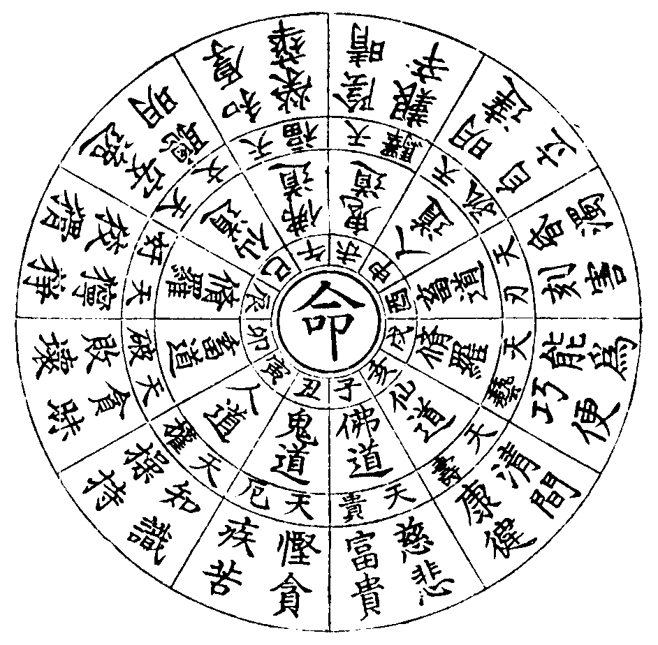
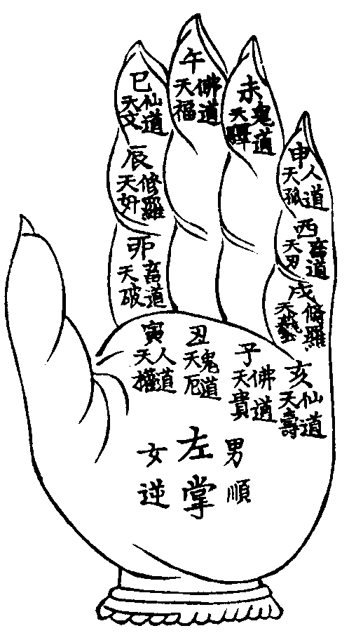

卍新纂大日本續藏經 第59冊
No.1043 看命一掌金 (1卷)
【唐 一行著】
第 1 卷
No. 1043
看命一掌金
唐一行禪師云但凡投師出家皆依此選僧圖取用若得一二識者方許出家全無識者反謗此教將佛聖言謬說只會目前之事未知末後一著所有十識皆是前生定也如無一二識者罪根深重不可得度除品格不凡於眾殊絕者弗在論也看十識之法年下取月掌圖之法年上起月月上起日日上起時二推年上起月月上起日日上起時三推如前至每推時行運或一歲運時前一位天星是次第倣此每運七年流年從運位起星推去月建從流年起星推去男順行女逆行吉凶可驗矣。
○通天識
子(三六十月)丑(正七十月)寅(六十十一月)卯(三九十二月)辰(正七十月)巳(三月十月)
午(正七十月)未(正四六月)申(正七十月)酉(三六十二月)戌(二七十月)亥(正八十月)
○三合識
子(二五八月)丑(二四五月)寅(五八十月)卯(六八十月)辰(正七十月)巳(二八十一月)
午(正四七月)未(正七十月)申(二七十一月)酉(二六十二月)戌(正七十月)亥(二五八月)
○善知識
子(二八十二月)丑(六九十一月)寅(正七十月)卯(六八十月)辰(二七十月)巳(二六十月)
午(正四十月)未(二五八月)申(正四十月)酉(七十十一月)戌(二七九月)亥(三六十月)
○方丈識
子(二七十二月)丑(二八十月)寅(二九十月)卯(六八十月)辰(二三十一月)巳(二六十月)
午(正四十月)未(二五八月)申(二四十月)酉(五七十一月)戌(二五九月)亥(二六七十)
○菩提識
子(二五十二月)丑(二六十月)寅(正七十月)卯(三七九月)辰(二六九月)巳(四七十月)
午(二六七月)未(六九十二月)申(正七十月)酉(正八十二月)戌(二九十二月)亥(二九十二月)
○福祿識
子(二八十一月)丑(二九十二月)寅(四七十二月)卯(二五十一)辰(二七十二)巳(二七十月)
午(二五八月)未(三五十一)申(四七十月)酉(二五十二)戌(二六十一)亥(四七十月)
○起家識
子(正七十一)丑(二五十一)寅(二六十月)卯(正四七月)辰(二五八月)巳(二六九月)
午(二六九月)未(四七十月)申(五八十一)酉(二九十二)戌(五七十月)亥(二九十二)
○消災識
子(二六十月)丑(正月十月)寅(六八十一)卯(正四七月)辰(正四七月)巳(三四十一)
午(九十十一)未(六八十一)申(正四七月)酉(二五八月)戌(三六九月)亥(九十十二)
○成就識
子(二五九月)丑(五六九月)寅(四七十月)卯(五月十月)辰(三九十月)巳(三七九月)
午(九十十一)未(六八十一)申(正四七月)酉(二五八月)戌(三六九月)亥(九十十二)
○佛法識
子(五八十月)丑(六九十二)寅(五七十月)卯(三五八月)辰(三九十一)巳(三七九月)
午(九十十一)未(六八十一)申(正四七月)酉(二五八月)戌(二六九月)亥(九十十二)

經云十二宮中去復還惟有重疊走江山世間多少榮枯者盡在山僧一掌看。

新刻看命一掌金
佛道天貴星
時辰落在天貴宮 一生清貴事和同
志氣不凡人出類 安然自在性明通
此星主人清高有德有行大事成小災禍無侵若更得天權祿驛星助者榮昌富貴若犯重者主悲泣翻悔中下小人半吉之命若逢孤厄破刃照命者必為朝堂折挫之人見貴而未為全吉也。
鬼道天厄星
時在厄中人混沌 惺惺作事又癡呆
此人帶疾方延壽 還須勞碌作生涯
此星在命主人帶疾若逢破刃相冲災疾必重若逢權貴星主人輕疾乃中上命也若逢孤驛奸星主作事遲疑一生啾唧定主蹭蹬離祖乃中下命也。
人道天權星
時辰落在天權宮 性格操持志氣雄
作事差遲人也喜 一呼百喏有威風
此星在命主人聰明俊秀洒落襟懷有權有勢多智多能若逢貴福文壽星相助者人人拱聽重犯者權而無權乃中命也若逢厄破孤驛在命者作事勞力財帛不聚未能先能未會先會浮浪中命也。
畜道天破星
時辰落在天破宮 推金積玉也成空
夜眠筭計圖家富 鈔袋誰知有蛀虫
此星主財帛空虗祖業耗散若得權貴福星相助亦為中命如遇驛刃孤厄犯重者作事艱難重重破敗浮浪東西之下命也。
脩羅道天奸星
大如滄海細如毛 佛口蟠心兩面刀
奸狡機謀藏毒性 意多翻覆最難調
此星照命主人一生勞碌啾唧奔波指東說西機變難測若得天貴福星相助財帛豐盈亦為上命若逢權刃星者必為奸權殘忍之小人言清行濁執性兇謀有害人之心無容人之量貪瞋太重非善人也若逢孤厄破驛定為慳貪嫉妒之小人乃下命也。
仙道天文星
命遇天文秀氣清 聰明智慧意惺惺
男才女秀身清吉 滿腹文章錦繡成
此星照命主人聰明怜俐學識過人作事和美若逢天貴天福天藝星相助定為鰲頭獨占虎榜登名金堦玉階之人也若遇天權天刃星者文武多才乃為上命如遇破厄孤驛及犯重者乃多學少成不為書筭文墨之輩必為雲遊湖海之人乃手藝術士之下命也。
佛道天福星
命逢天福是生時 定然倉庫有餘盈
寬洪大量根基穩 財帛光華有福齊
此星坐命主人受福清閑性情自在度量寬洪根基穩實又得權刃相扶衣帛充足倉庫盈餘堆金積玉之命若犯重者衣祿不多若逢驛孤奸破星者必主慳貪嫉妒衣祿艱難之命也。
鬼道天驛星
人道若逢天驛星 搬移離祖不曾停
身心不得片時靜 走遍天涯足未寧
此星照命主人離鄉別井骨肉情疎勞碌身心自成自立之命若逢福權貴刃壽文星者必主官祿供給車馬相隨乃榮顯之命若逢孤破厄星猶如風吹樹葉水上浮萍心猿意馬奔馳不定方外雲遊江湖跋涉之下命也若犯重而刃厄相刑者必為徒流之類。
人道天孤星
時辰若逢此天孤 六親兄弟有如無
定作空門清淨客 總有妻兒情分疎
此星照命主一生孤獨男人得之六親無分女人得之尅子妨夫孤星犯重者反不為孤必為半僧半俗身在俗門心在空門之人若得權福貴壽星助乃上命也亦不免少年刑尅若逢破驛奸厄刃星必為雲水漂流下命也凡選故家之命要看孤星為主。
畜道天刃星
天刃為人性太剛 是非終日要爭強
持刀弄斧刑心重 好似將軍入戰場
此星照命主一生剛狠性格躁具自做自是不受人觸受不得閑氣風火性過端然無事若得權貴福星為人不俗禮義足以化強暴乃上命也若逢孤破奸厄膽大心粗形體殘疾不免斷髮身死乃下命也惡星少而吉星多者亦為中命犯重者必主殘疾。
脩羅道天藝星
天藝生人性最靈 將南作北逞多能
所為方便機關巧 到處和同作事勤
此星照命主人多智多能機巧近貴若犯重者主資質昏鈍懶惰愚頑多學少成匠作用力之輩若得天權貴福文壽俱全剛柔相濟雖為藝術亦可成立若逢天孤可為僧道之出類者乃中命也若逢破厄則藝業無成終為下命。
仙道天壽星
天壽生人命最長 上恭下敬性溫良
一聞千悟心慈善 喜怒中間有主張
此星照命主人長壽康徤智慧聰明作事溫良有救人之心無傷人之意恩中招怨作事朴實眾人欽敬平生安穩有始有終喜怒不形若得天權福貴刃星相助必主寬洪大量福壽綿綿犯重者有壽無福犯孤破厄星乃中命也。
十二星總論
詳夫觀命之法當以命宮限數為先男怕孤驛凶星有天福天貴者不妨女怕破刃厄星有天權星者助夫旺子有天文天藝星者性巧有天福天貴天壽星者命穩實有天奸星而犯重者定主貧賤淫污玷辱宗祖行運而逢兩重者命限大晦月分而逢孤破厄星者此月亦主凶災男命而重天貴者貴而不貴兩重天權者權而無權天文重者男女泛濫女命天貴重者終許見貴若見四重貴者尅子而衣祿豐盈天福重者衣祿自然厄在時日重者反不為厄逢三厄者不唯無厄而衣祿有餘命限天權星者虗貴而刑妻尅子四厄星者主二子衣祿有餘命有二權星者壯重正大命有三權星者必主威權有二天破星者衣祿反穩有三破星者破敗下命有四破星者無衣祿而壽不長奸星見重者反不奸而正大有三奸星者狡獪下流之人有四奸星者亦主徙流刑敗文星重者主富貴文星三者衣祿少而多文學四文星者尅妻而損目二福者尅妻而見貴三福星者有壽而無福四福星者衣祿充裕二驛星者反生安閑三驛星者主下賤四驛星者得奴僕力二孤星者有子孫三孤星者女尅夫男尅子四孤星者妻貧窮二刃星者多慈善三刃星者乃貴人有權之命四刃星者權貴而壽夭二藝星者刑妻而尅子三藝星者曚瞳而昏愚四藝星者踴蹬而無成二壽星者性愚魯三壽星者出家而高壽四壽星者離祖而窮苦貴驛二重多勞碌破若逢文必夭亡權若見孤多刑尅二孤尅壽者年雖高而破敗招非少年重奸者慳貪而福亦不永藝若逢奸刑傷破敗刃若見厄疾病貧窮生時逢二厄早歲凶亡四柱有三孤中年破敗刃厄同宮損自己而傷手足貴壽權生年月必豐祖業而顯門閭破刃孤厄會於一時難為夫妻子息十二星之理於斯備矣論一生之命孰有疑焉智者詳審而細推之自可究禍福於前知也。
論十二月生
正月生人利官近貴大事成小仔細小心之命能招四方財源妻兒和合竝無尅破。
正月生人詩
端然相貌是前緣 平生快樂福綿綿
貴人接引增吉慶 和合團圓過百年
二月生人心性溫和心無毒害聰明多智六親少緣中限發財大富貴半真半假之命。
二月生人詩
平生性善自家知 一生衣祿自豐肥
錢糓家寶多富貴 高人歡喜小人欺
三月生人詩
為人心直自寬懷 平生招得四方財
中限榮華時發福 猶如枯木遇春來
四月生人心性不定名動四方愛結朋友不住祖業自立家風初限中限平平末限大發富貴。
四月生人詩
一年命限勝一年 不須瞋恨苦憂煎
更得持齋方便福 夫妻和合永團圓
五月生人溫和良善心性伶俐有權勢威風行事正直貴人接引夫妻中途離別之命。
五月生人詩
出入常常遇橫財 貴人接引笑顏開
田園事業多興旺 富貴榮華次第來
六月生人性巧伶俐為人遠達身有藝術不守祖業初有財中限吉利末限富貴機謀太重乃好命也。
六月生人詩
平生衣祿自然昌 為人顯達好文章
優游快樂家豪富 夫妻諧老百年長
七月生人為人慈善作事仔細愛好初限平平中限少好末限富貴榮華之命也。
七月生人詩
一世為人不必憂 安然無事掛心頭
家業田園宜自立 方知福祿命中求
八月生人眼目光暉聰明達理正真無私有藝有財文章近貴之命也若離祖生大貴。
八月生人詩
為人端正貌堂堂 心地聰明性善良
作事多能心達理 佗年運到福綿長
九月生人詩
買賣生人事事強 營謀動作志軒昂
若能脩善多作福 管取衣資積滿箱
十月生人大海之心不動不懶先難後易衣祿充身之命也先女後男出家亦難為師長徒弟在家亦難為子息夫妻命中多招刑尅。
十月生人詩
十月生人慶吉星 災殃永退不相侵
持齋善念行方便 衣祿盈餘自稱心
十一月生人有權性急伶俐近貴心多計謀身有陪疾初限平平中限發福末限富貴之命也。
十一月生人詩
早年獨立自成家 衣祿從心自可誇
骨肉弟兄無倚靠 相交朋友水中華
十二月生人百年勞心心直口快亦主暗疾父母兄弟難靠衣祿自能得四方之財半吉之命也。
十二月生人詩
初限勤勞受苦心 自成自立不求人
心慈口快難藏毒 長幼團圓過幾春
論每月三十日內輪該吉凶星在命
初一 初七 十三 十九 二十五
此日生人太陽星值日為人衣祿有餘初限平常末限大好十九二十五歲男享榮華有父母得力女人乃旺夫發福之命。
初二 初八 十四 二十 二十六
此日生人太陰星值日為人秀氣父母有尅六親無倚兄弟難靠男主清奇女主聰明成立之命也。
初三 初九 十五 二十一 二十七
此日生人天武星值日主夫妻和合不能偕老子息刑傷末限榮華富貴之命招過房子離祖成家祖業田園耗散女人傷夫子息難招縱有也要別離過房者不妨。
初四 初十 十六 二十二 二十八
此日生人天母星值日為人多學少成中限無財惹是招非姻緣和順末限富貴大吉利之命也。
初五 十一 十七 二十三 二十九
此日生人天皇星值日為人伶俐衣祿有餘六親無分兄弟難倚財利無虧中平之命也。
初六 十二 十八 二十四 三十日
此日生人太乙星值日為人多學多能清間高貴文墨之命初限大貴中限平穩末限大旺財祿之命兄弟無依方可。
論十二時生人吉凶
子時
生人性急命帶剛強作事反覆不定招人是非父母妻子有尅自手成家之命也十一十八三十六四十六五十八八十九歲之壽。
丑時
生人父母刑尅一生敬貴有勢有力末限大好福祿有餘之命也十八二十六三十一四十六有災其年可持齋作福七十三歲之壽。
寅時
生人父母兄弟妻子多尅離祖方好初限平平末限發財二十六二十九三十三三十九四十九六十六歲主得氣血之疾過此九十六歲之壽。
卯時
生人父母兄弟妻子無力初限中限作事無成末限安穩一生難守祖業出家入贅先凶後吉十八二十六歲上有災過此可延九十歲壽。
辰時
生人父母兄弟妻子難全性格聰明伶俐初限有財中限破財末限依舊光暉十九二十七三十六三十九小災過此七十五歲之壽。
巳時
生人聰明俊麗初限榮華衣祿有餘自家成立產業骨肉刑尅之命三十一三十六四十九有災過此七十四歲之壽。
午時
生人為人春風和氣改換祖業初限中限吉利宜持齋作福十三三十二三十六四十九有疾過此七十八歲之壽。
未時
生人父母不全夫妻刑尅勞碌成家之命初限有財中限驚恐末限財祿有餘十九二十九五十六有災過此七十三歲之壽。
申時
生人離祖則吉父母兄弟不全夫妻到老向善近貴之命初限反覆末限大好十九二十二二十六三十八四十九有災過此七十七歲之壽。
酉時
生人為人淳厚難為父母兄弟初限反覆末限大好二十二二十八三十九四十六小災過此七十七歲之壽。
戌時
生人清俊秀美一生快樂之命但福祿亦主進退初中二限平安吉利末限父母相刑妻子有損十四二十六二十九三十六有災過此七十五歲之壽。
亥時
生人心直口快自然福祿加增一生辛勤勞碌初限祖業難守末限大吉之命也二十六三十六四十九五十六小災過此八十八歲之壽。
論十二時初中末生人吉凶
子
初生人先尅母自成家計作事七進八退十成九敗六親疎淡衣祿浮沈末限享福好收成結果之命。
詩
又
子
中生人無尅破一生作事估強有起有倒有成有敗末後雖大興旺須用離祖入贅為吉。
詩
子
末生人先主尅父六親不得力子息不順一生勤苦勞碌作事有頭無尾財帛不聚更改之命晚景好。
詩
丑
詩
丑
中生人為人老實進益田庄自小夫妻得力父母六親相和末限大發富貴之命。
詩
丑正先防父 頭男防老傷 須要防妻損
爺娘亦恐傷 聰明伶俐有 福祿益衣糧
財帛田園廣 榮華末運昌
丑
詩
寅
初生人主先尅父依祿有餘為人聰明發達自成自立有盈有虧心性不定好勝好間末限有福之命。
詩
寅
中生人若無冲尅父母雙全衣祿盈餘有福有壽自成家業先主榮華末景安常之命。
詩
寅中命吉昌 聰明性氣剛 一生宜出祖
名姓四方揚 寅正少兄弟 三孫世代長
尅妻須保守 財旺益田庄
寅
末生人先尅母自家成立六親無倚離祖出家之命一生勤苦勞心妻子有尅帶疾方可延壽。
詩
寅末命平安 祖業末能看 一生多險厄
舟破上高灘 子媳招宜晚 頭妻未有緣
弟兄無倚靠 假子送歸天
卯
初生人先主尅母四方衣祿有助祖業既成又敗作事有頭無尾家計自成立之命。
詩
生來初卯時 為人最孤恓 衣祿隨時度
見喜又生悲 廿土自成立 堪憐尅正妻
兄弟不得力 子息定招遲
卯
詩
富貴架高梁 衣祿甚風光 一生家業旺
武藝近君王 子息成行列 妻富定見雙
宮星身命主 兄弟列成斑
卯
末生人先尅父十九作事成敗衣祿進退末限平平親子難招祖業雖多不得承受獨權自立在外成家之命也。
詩
初限甚勞碌 憂勤自立家 知音時運至
枯木又生花 命裡多兄弟 田庄又屬佗
子息雖難靠 賢妻甚可誇
辰
初生人先尅父若是長子必然難為兄弟聰明曉事慈心愛人大事成小衣祿平常自成自立之命子息晚招離祖出贅方可。
詩
衣祿四方來 兄弟六親乖 平地生荊棘
間非擾悶懷 雙親椿早折 妻子淚盈腮
一生多反覆 疑是命中該
辰
中生人先主尅母衣祿平平立心公道剛直中限富貴性急如風吹火易發易解自成家業妻王高門贅媚外居之命。
詩
日日走奔波 財源自有無 六親不得力
口舌事常多 辰正妻官厄 兒孫未見知
外子承親母 晚景甚巍峩
辰
末生人命無尅破心性公平財祿穩足多受快樂如魚化龍門飛騰變化顯達家門之命。
詩
魚龍變化身 衣祿自然盈 一朝雷雨作
四海振聲名 辰末頭妻尅 闐房親上親
親兒雖得力 外子更相親
巳
詩
此命出尋常 脩行燒好香 子母多離別
家業始榮昌 巳初子孫早 鴻鴈不成行
田園進復退 財帛日中霜
巳
中生人先生尅父平生惟直開口譚天說地為人多管閒事多成多敗六親無力志氣超羣之命。
詩
立身身自穩 舉意意冲天 膽氣如天大
末限福綿綿 巳中子孫望 亦主進田園
尅妻二子立 後代子孫賢
巳
末生人無尅破衣祿豐足兄弟俱全性巧近貴為人成家快樂之命若出家大吉。
詩
巳末喜文章 成家大吉昌 蟾宮相咫尺
立在貴人鄉 巳末福無量 妻宮恐見傷
立身多快樂 晚景受安康
午
初生人無尅破一生富貴文武皆通為人慷慨出眾超羣但六親無力出外成家之命。
詩
生來正午初 一動百人扶 安車并坐馬
變化貴人摸 六親不得力 兄弟亦多疎
妻房多財富 富室擁千奴
午
詩
午
詩
未
初生人無尅破兄弟完全到處風流先勤後怠衣食足用不求自至初限辛苦晚景添財。
詩
未
中生人先尅父衣祿自然心中平等人事周全功名富貴六親難為前凶後吉之命。
詩
未
詩
申
初生人無尅破性巧聰明逢凶有救大事成小一生穩厚損妻子自成家業之命。
詩
申
詩
申
末生人先尅母六親不得力婚配宜遲妻招一姓為人多疑逢凶化吉之命。
詩
酉
初生人無尅破衣祿充足多招祖業性巧聰明男如龍虎文武皆通女精巧晚景稱意。
詩
酉
詩
酉
末生人先尅母六親不得力性急不悔衣祿無虧辛榮反覆子息難為終年孤獨之命。
詩
戌
詩
戌
中生人先尅母六親無靠食衣在於公門逢凶化吉心貪快樂辛苦勞心膽如麻子口似風顛末限發福之命。
詩
亥
詩
亥
中生人無尅破父母前聲應後聲平等有權不犯災厄親近貴人晚景發達之命。
詩
亥
末生人先尅母衣祿隨時六親得力貴人扶助宜作福脩齋末後得貴子顯達之命。
詩
十二時中亥末遲 衣祿無多但隨時
肯向善心脩齋戒 定生貴子來相持
上半年夜半前作前半月下半年夜半後作後半月不問男女地支四字子寅午申戌為陽丑亥酉未巳卯為陰四字中陽多陰少主尅父陰多陽少主尅母得之於心應之於手年上起月月上起日日上起時時上起刻男順女逆逢凶則凶逢貴則貴運掌之間照然莫能迯焉。
推人五命得病忌日
此法玄機通天地 大月從上數至下
小月從下數至上 先問得病月期數
便知病人患吉凶 玅訣推筭無人會
先天毫釐定生死 初一日起子細論
馬立人生災有救 馬倒收拾入幽冥
馬斜有災即可治 祿正命重命不傷
祿馬俱倒鬼到門 祿斜有災請醫冥
論十二時歌
子午卯酉四字高 為人聰明逞英豪
多有兄弟難倚靠 一雙父母不相交
時初時末無伴侶 時正孤單獨自挑
財重祿榮身貴顯 翼冲雲漢福滔滔
寅申巳亥四字強 為人聰慧近文章
時正兄弟三四個 時初時末也成雙
父母無刑多倚靠 榮華富貴坐高堂
若得父母雙全在 晚景榮華大吉昌
辰戌丑未四字孤 上妨父母六親疎
雖有兄弟難倚靠 祖房常被別人祖
時初管取先亡父 時末尅母在冥途
公門事業為生計 男為僧道女為尼
看命一掌金(終)